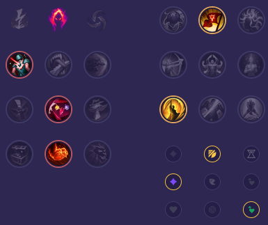

Starter: 🔴 Szczeniak Żaroszpona Mikstura Zdrowia Core Bulid: Przepływ Burzy Buty Maga Płomień Cienia Full Bulid: Klepsydra Zhonyi Zabójczy Kapelusz Rabadona Kostur Pustki

Słaby przeciwko: - Nocturne - Dr. Mundo - Vi - Shaco - Rek'Sai - Amumu Dobry przeciwko: - Viego - Xin Zhao - Master Yi - Ambessa - Nidalee - Jax